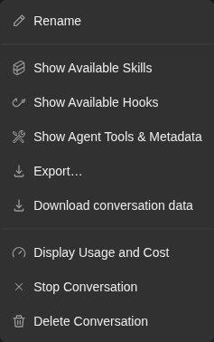
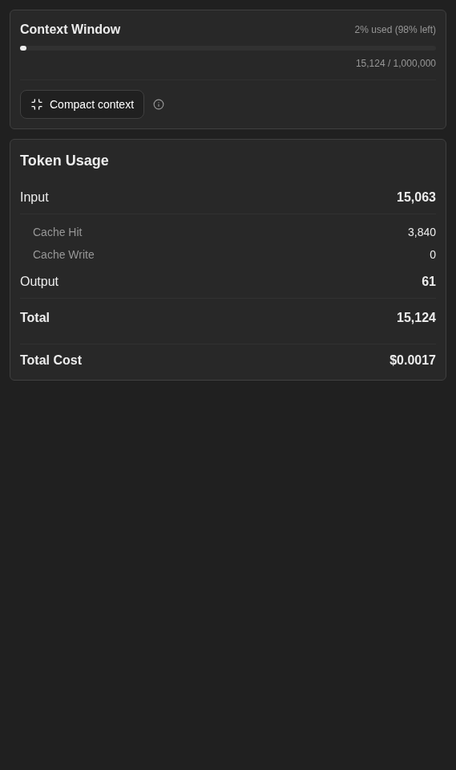

How to get to it
- Sidebar conversation row (
conversation-card), or the home composer submit, which navigates to the new conversation. - Direct URL
/conversations/<id>. - Direct URL
/conversations/<id>/panel, or the header panel button, at phone width (up to 1024 px); at desktop width that URL redirects to/conversations/<id>with the drawer open. - Hovering a message in the history: Branch from here (local backends only).
- Chips under the composer (git control bar) for conversations in a git workspace (home Open Workspace).
- Header controls inside
testid=chat-pane-header: the status dot (server-status-menu-trigger), the title (conversation-name-title), the "..." button (ellipsis-button, aria "More options"),conversation-git-actions-toggle,conversation-overview-toggle,right-panel-toggle.
Before you start
Start with the common launch and health checks, then follow this family’s preconditions in order. Recipes share the fixtures and state named below.
Preconditions:
- Baseline state (launched, doctored,
onboard --skipdone) and an active LLM profile (control-openhands llm preset deepseek). - A finished conversation:
control-openhands conversation start --prompt "Reply with the single word: pong" --wait --timeout 240prints its<id>. - A running conversation for the active-only items:
control-openhands conversation start --prompt "Run the shell command: sleep 90 ; then reply with the word done" --wait --until running --timeout 120prints<running-id>. It finishes after about 90 s, so start it right beforeF07.stop-confirm(after a Stop it stayspauseduntil Start Runtime). - A conversation in a git workspace for the git control bar:
control-openhands fixture git-repo --name qa-f07-repo, thencontrol-openhands browser goto /(conversation startleft the browser on<id>),control-openhands browser click 'testid=open-workspace-button',control-openhands browser click 'role=dialog >> role=combobox[name="Select a workspace"]',control-openhands browser click 'role=dialog >> role=button[name="+ Add Workspace"]',control-openhands browser click 'testid=folder-browser-sidebar-workspace',control-openhands browser click 'testid=folder-browser-up'three times (to the run directory),control-openhands browser click 'testid=folder-browser-entry-workspace',control-openhands browser click 'testid=folder-browser-entry-qa-f07-repo',control-openhands browser click 'testid=folder-browser-use',control-openhands browser click 'testid=workspace-launch-button', thencontrol-openhands conversation start --prompt "Reply with the single word: ok" --stay --wait --timeout 240prints<git-id>. - Cloud-only rows (
F07.cloud-only) are blocked without an OpenHands Cloud account. - Desktop viewport unless a bullet says otherwise.
Behavior inventory
25 stable behavior IDs and their expected behavior
F07.open-by-url/conversations/<id>shows header, history and composer, and remembers the id as the backend's last conversation. Read recipe ↓F07.missing-redirectan unknown id toasts "This conversation does not exist…" and redirects to/conversations. Read recipe ↓F07.history-skeletonopening a conversation shows a message skeleton until its history has loaded. Read recipe ↓F07.panel-routeat phone width (up to 1024 px) the header panel button opens/conversations/<id>/panel, the tabs panel full width with a Back button; wider, that URL redirects to/conversations/<id>with the drawer open beside the chat. Read recipe ↓F07.rename-inlinedouble-click the title (or menu Rename), Enter or blur saves with a toast; an empty value reverts. Read recipe ↓F07.skills-modalShow Available Skills lists the loaded skills with expandable rows and Refresh. Read recipe ↓F07.hooks-modalShow Available Hooks lists the workspace's.openhands/hooks.jsonhooks by event (read when it first opens for a conversation after a page load, and on Refresh; a reopen within 5 minutes of the last read shows the cached list), or "No hooks configured for this conversation." Read recipe ↓F07.skills-modal-projecta workspace with.agents/skills/<name>/SKILL.mdadds a "Project skills" section above the public ones; each row expands to its triggers and body. The list is read with the page and on Refresh; opening the dialog within 10 minutes of the last read shows the cached list. Read recipe ↓F07.agent-tools-modalShow Agent Tools & Metadata shows the system message and the tool list. Read recipe ↓F07.export-transcriptExport… downloads a Markdown or HTML transcript with optional tool details and timestamps. Read recipe ↓F07.download-zipDownload conversation data downloadsconversation_<id>.zip. Read recipe ↓F07.display-costDisplay Usage and Cost opens the right panel on the Usage tab. Read recipe ↓F07.stop-confirmStop Conversation asks for confirmation; Confirm Close pauses the conversation and returns to/conversations. Read recipe ↓F07.delete-confirmDelete Conversation names the title in a confirmation; Cancel keeps it, Confirm Delete removes it and returns to/conversations. Read recipe ↓F07.branch-from-messageBranch from here on a message forks the conversation as<title> (branch); on a user message the message is left out and its text goes back into the composer. Read recipe ↓F07.right-panel-togglethe header panel button shows and hides the right tabs panel (closed again after a reload). Read recipe ↓F07.overview-togglethe header (i) button shows and hides the Overview column, which is exclusive with the right panel. Read recipe ↓F07.git-control-barunder the composer, a folder workspace shows an inert workspace chip and the branch; with a GitHuboriginthe repo and branch chips link to GitHub and Pull, Push and Pull Request appear. Read recipe ↓F07.git-control-bar-sendthe Pull, Push and Pull Request chips send their git prompt to the agent at once. Read recipe ↓F07.cloud-onlyShare publicly, Connect Repo,task-<uuid>start URLs, paused-sandbox resume, archived read-only state and the shared-conversation redirect exist only on a Cloud backend. Read recipe ↓F07.phoneat 390 px the header keeps its controls and the info dialogs fit the viewport. Read recipe ↓
Readable recipes
Read each script from top to bottom. Code is copied from the map; prose gives the action, expected observation, and conditions. <id>, <run> and similar placeholders stand for values from your own run. Short forms such as browser count continue the same control-openhands invocation; they are kept as documented.
Expected observations describe the recipe’s contract. Captures below selected recipes show representative real states from this snapshot; they do not mark every mapped behavior as passed. Follow cleanup before moving to another family.
No recipes match. Try another word or a behavior ID.
Open by URL #
- Do
control-openhands browser goto /conversations/<id> - Wait
control-openhands browser wait 'testid=chat-pane-header' - Check
control-openhands browser text 'testid=conversation-name-title' - Check
control-openhands browser count 'testid=chat-interface >> testid=agent-message' - ExpectThe title is the generated one and the count is
1. - Do
control-openhands browser eval "localStorage.getItem('openhands-last-conversation-by-backend')"reads
{"default-local":"<id>"}.
Unknown id #
- Do
control-openhands browser goto /conversations/00000000-0000-0000-0000-000000000000 - Wait
control-openhands browser wait-url '/conversations$' - Check
control-openhands browser toasts - ExpectA toast reads
This conversation does not exist, or you do not have permission to access it. If this is your conversation, try switching to the workspace where it was created.and the last-conversation slot is{}. - ExpectIt is the only toast:
- Check
control-openhands browser toasts --historyhas no entry with
does not understand.
Rename inline #
- NoteOn
/conversations/<id>(control-openhands browser goto /conversations/<id>; the unknown id redirected to/conversations) run - Do
control-openhands browser dblclick 'testid=conversation-name-title' - Do
control-openhands browser fill 'testid=conversation-name-input' 'QA_F07 renamed' - Do
control-openhands browser press Enter - Check
control-openhands browser toasts(
Conversation title updated successfully), then - Do
control-openhands browser reload - Check
control-openhands browser text 'testid=conversation-name-title' - ExpectIt reads
QA_F07 renamed, and so does - Check
control-openhands browser text 'testid=conversation-card >> testid=conversation-card-title'
Rename from the menu, empty value #
- Do
control-openhands browser click 'testid=chat-pane-header >> testid=ellipsis-button' - Do
control-openhands browser click 'testid=conversation-name-context-menu >> testid=rename-button' - Do
control-openhands browser fill 'testid=conversation-name-input' '' - Do
control-openhands browser press Enter - ExpectThe title stays
QA_F07 renamedand no toast appears.
History skeleton and sidebar entry #
- NoteFrom
/(control-openhands browser goto /) run - Do
control-openhands browser click 'testid=conversation-card >> has-text=QA_F07 renamed' --expect-url '/conversations/[0-9a-f-]+' --observe 'testid=chat-messages-skeleton' --observe-ms 3000(run it after the rename above; before it, match the generated title instead).
- ExpectThe
observedlist shows the skeleton present for a few hundred ms, then<absent>; the URL is/conversations/<id>?backend=default-local.
Status menu, stop #
- NoteOn
/conversations/<id>run - Check
control-openhands browser hover 'testid=server-status-menu-trigger'(for a mouse the hover opens the menu and a click on the open menu's dot closes it; a CLI
clickfrom elsewhere usually opens it only because the click lands before the hover renders, a race that sometimes leaves it closed, so do not click), - Check
control-openhands browser text 'testid=server-status-context-menu'(
Running/Stop Runtime), then - Check
control-openhands browser click 'testid=server-status-context-menu >> testid=stop-server-button' --expect-url '/conversations$' - Check
control-openhands browser toasts - ExpectThe toasts read
Stopping conversation...andConversation stoppedand the URL is/conversations.
Menu #
- NoteStop Runtime left the browser on
/conversations: run - Do
control-openhands browser goto /conversations/<git-id>(a finished conversation whose runtime was not stopped), then
- Do
control-openhands browser click 'testid=chat-pane-header >> testid=ellipsis-button' - Check
control-openhands browser testids 'testid=conversation-name-context-menu' - NoteOn a finished or running conversation the items are
rename-button,show-skills-button,show-hooks-button,show-agent-tools-button,export-transcript-button(Export…),download-trajectory-button,display-cost-button(Display Usage and Cost),stop-button,delete-button. - Do
control-openhands browser press Escape - Notecloses it (
control-openhands browser count 'testid=conversation-name-context-menu'is0) and focus is back on the trigger (control-openhands browser eval "document.activeElement.dataset.testid"isellipsis-button). - NoteOpen it again:
- Do
control-openhands browser mouse-click 900 500 - Notecloses it too (count
0).

Conversation menu offers Rename, Skills, Hooks, Agent tools, Export, Download Data, Display Usage and Cost, Stop Conversation and Delete Conversation.
Representative documentation capture, not a complete run of this recipe or family. Captured on an isolated local backend at desktop viewport using the current main checkout. Doctor passed and pageErrors were zero. Error history contains GET /api/llm/balance 404 responses on this local backend; this is not a clean-errors claim.
How this screenshot was taken
canvas: 1.26.0 · agent server: 1.53.0 · sdk: 1.53.0 · automation: 1.19.0
OH_VERIFY_RUN="$OH_VERIFY_RUN" control-openhands fixture git-repo
OH_VERIFY_RUN="$OH_VERIFY_RUN" control-openhands conversation start --workspace qa-repo --prompt 'Reply with a markdown table with columns Step and Result and exactly two rows: Setup | ready, Reply | hello. Then a python code block containing print(1). Do not run any tools.' --wait --timeout 180
OH_VERIFY_RUN="$OH_VERIFY_RUN" control-openhands conversation events <conversation-id> --kinds ActionEvent --last 10
OH_VERIFY_RUN="$OH_VERIFY_RUN" control-openhands browser snapshot testid=agent-message
OH_VERIFY_RUN="$OH_VERIFY_RUN" control-openhands browser type testid=chat-input /
OH_VERIFY_RUN="$OH_VERIFY_RUN" control-openhands browser snapshot testid=slash-command-menu --max-lines 50
OH_VERIFY_RUN="$OH_VERIFY_RUN" control-openhands browser press Escape
OH_VERIFY_RUN="$OH_VERIFY_RUN" control-openhands browser fill testid=chat-input ''
OH_VERIFY_RUN="$OH_VERIFY_RUN" control-openhands browser click 'testid=chat-pane-header >> testid=ellipsis-button'
OH_VERIFY_RUN="$OH_VERIFY_RUN" control-openhands browser snapshot testid=conversation-name-context-menu
OH_VERIFY_RUN="$OH_VERIFY_RUN" control-openhands browser screenshot testid=conversation-name-context-menu --feature F07.menu-open --name conversation-menuStop with confirmation #
- NoteOn
/conversations/<running-id>run - Do
control-openhands browser click 'testid=chat-pane-header >> testid=ellipsis-button' - Do
control-openhands browser click 'testid=conversation-name-context-menu >> testid=stop-button' - Check
control-openhands browser snapshot 'role=dialog'(
Confirm Stop Conversation, buttonsCancelandConfirm Close). - Do
control-openhands browser click 'role=dialog >> role=button[name="Cancel"]' - Notecloses it and
- Check
control-openhands conversation status <running-id> - Notestays
running. - NoteRepeat the two clicks, then
- Do
control-openhands browser click 'role=dialog >> role=button[name="Confirm Close"]' --expect-url '/conversations$' - Notethe toasts read
Conversation stoppedandconversation status <running-id>ispaused.
Branch from a message #
- NoteOn
/conversations/<id>(control-openhands browser goto /conversations/<id>; Stop with confirmation ended on/conversations) run - Do
control-openhands browser hover 'testid=agent-message' - Do
control-openhands browser click 'testid=agent-message >> role=button[name="Branch from here"]' --expect-url '/conversations/(?!<id>)[0-9a-f-]+' - Check
control-openhands browser text 'testid=conversation-name-title'(
QA_F07 renamed (branch)) and - Check
control-openhands browser count 'testid=chat-interface >> testid=user-message'(
1, the history is copied up to that reply). - NoteBack on
/conversations/<id>(control-openhands browser goto /conversations/<id>), - Do
control-openhands browser hover 'testid=user-message' - Do
control-openhands browser click 'testid=user-message >> role=button[name="Branch from here"]' --expect-url '/conversations/(?!<id>)[0-9a-f-]+'(it prints
/conversations/<branch-id>): the new branch has0user messages and - Check
control-openhands browser text 'testid=chat-input'reads the original prompt
Reply with the single word: pong, still there a few seconds later and not sent (control-openhands conversation events <branch-id> --kinds MessageEventhas count0).
Delete with confirmation #
- NoteOn a disposable conversation (for example the branch from
F07.branch-from-message) run - Do
control-openhands browser click 'testid=chat-pane-header >> testid=ellipsis-button' - Do
control-openhands browser click 'testid=conversation-name-context-menu >> testid=delete-button' - Check
control-openhands browser snapshot 'role=dialog' - Note:
Confirm Delete Are you sure you want to delete the "<title>" conversation? This action cannot be undone.withCancelandConfirm Delete. - Do
control-openhands browser click 'role=dialog >> role=button[name="Cancel"]' - Notekeeps the URL.
- NoteRepeat the two clicks, then
- Do
control-openhands browser click 'role=dialog >> role=button[name="Confirm Delete"]' --expect-url '/conversations$' - Check
control-openhands api GET '/api/conversations?ids=<id>'returns
[null]andbrowser goto /conversations/<id>redirects as inF07.missing-redirect.
Paused conversation #
- Do
control-openhands browser goto /conversations/<running-id> - Noteopen the "..." menu and
- Check
control-openhands browser testids 'testid=conversation-name-context-menu' - Note:
show-hooks-buttonandstop-buttonare absent. - NoteClose it with
- Do
control-openhands browser mouse-click 900 500 - Check
control-openhands browser click 'testid=server-status-menu-trigger' - Check
control-openhands browser text 'testid=server-status-context-menu'(
Server Stopped/Start Runtime), then - Check
control-openhands browser click 'testid=server-status-context-menu >> testid=start-server-button' - Wait
control-openhands conversation wait <running-id> --until running,finished,idle --timeout 60 - ExpectThe status is
runningagain and the menu readsRunning/Stop Runtime.
Hooks #
- NoteOn
/conversations/<running-id>(no workspace attached; Paused conversation left the browser there) open the "..." menu, - Do
control-openhands browser click 'testid=conversation-name-context-menu >> testid=show-hooks-button' - Check
control-openhands browser text 'testid=hooks-modal' - ExpectIt reads
Available Hooks, the workspace explanation andNo hooks configured for this conversation.(the backend workspace root has nohooks.json). - Check
control-openhands browser network --clear - Do
control-openhands browser click 'testid=hooks-modal >> testid=refresh-hooks' - Note: the text stays and
- Check
control-openhands browser networkshows
POST /api/hooks. - Do
control-openhands browser click 'testid=close-hooks-modal' - Notecloses it.
Skills #
- NoteOpen the menu,
- Do
control-openhands browser click 'testid=conversation-name-context-menu >> testid=show-skills-button' - Check
control-openhands browser snapshot 'role=dialog'(
Public skills 12and one button per skill), - Do
control-openhands browser click 'testid=skills-modal >> role=button[name="github Knowledge"]' - Notethe row expands to
TriggersandContent. - Do
control-openhands browser press Escape - Notecloses it (
browser count 'testid=skills-modal'is0).
Project skills and configured hooks #
- NoteArrange (outside the UI) a project skill and a hook in the git fixture:
mkdir -p <run>/workspace/qa-f07-repo/.agents/skills/qa-f07-skill <run>/workspace/qa-f07-repo/.openhands, write<run>/workspace/qa-f07-repo/.agents/skills/qa-f07-skill/SKILL.mdwith front mattername: qa-f07-skill,description: QA fixture skill for F07.,triggers: [qaf07trigger]and the bodyQA_F07 skill body., and write<run>/workspace/qa-f07-repo/.openhands/hooks.jsonas{"pre_tool_use":[{"matcher":"terminal","hooks":[{"type":"command","command":"true","timeout":10}]}]}. - Wait
control-openhands conversation start --workspace qa-f07-repo --prompt "Reply with the single word: hi" --wait --timeout 240 - Noteprints
<hooks-id>; - Check
control-openhands api GET /api/conversations/<hooks-id>shows that
hook_config.pre_tool_useholds theterminalmatcher. - NoteOn
/conversations/<hooks-id>open the menu, - Do
control-openhands browser click 'testid=conversation-name-context-menu >> testid=show-skills-button' - Check
control-openhands browser snapshot 'role=dialog' - Note:
Project skills 1withbutton "qa-f07-skill AgentSkills"abovePublic skills 12. - Do
control-openhands browser click 'testid=skills-modal >> role=button[name="qa-f07-skill AgentSkills"]' - Noteexpands it to
Triggers qaf07trigger Content QA_F07 skill body.; - Do
control-openhands browser click 'testid=skills-modal >> testid=refresh-skills' - Notere-reads the workspace (
browser networkshowsPOST /api/skills). - NoteClose with
- Do
control-openhands browser press Escape - NoteHooks: open the menu,
- Do
control-openhands browser click 'testid=conversation-name-context-menu >> testid=show-hooks-button' - Check
control-openhands browser snapshot 'testid=hooks-modal' - Note: one collapsed event,
button "Pre Tool Use 1 hook". - Do
control-openhands browser click 'testid=hooks-modal >> role=button[name="Pre Tool Use 1 hook"]' - Noteexpands it to
Matcher terminal Commands true Type: command Timeout: 10s(control-openhands browser screenshot --feature F07.hooks-modal --name workspace-hooks). - NoteClose it with
- Do
control-openhands browser click 'testid=close-hooks-modal' - Noteand write
<run>/workspace/qa-f07-repo/.openhands/hooks.jsonas{"pre_tool_use":[{"matcher":"terminal","hooks":[{"type":"command","command":"true","timeout":10}]}],"stop":[{"hooks":[{"type":"command","command":"echo qa-f07-stop"}]}]}. - ExpectA reopen keeps the list it read: run
- Check
control-openhands browser network --clear - Noteopen the menu,
- Do
control-openhands browser click 'testid=conversation-name-context-menu >> testid=show-hooks-button' - Noteagain, then
- Check
control-openhands browser network --filter /api/hooks(no request) and
- Check
control-openhands browser snapshot 'testid=hooks-modal'(still only
button "Pre Tool Use 1 hook"). - NoteRefresh re-reads the file:
- Do
control-openhands browser click 'testid=hooks-modal >> testid=refresh-hooks' - Check
control-openhands browser network --filter /api/hooksshows
POST /api/hooksand the snapshot addsbutton "Stop 1 hook"; - Do
control-openhands browser click 'testid=hooks-modal >> role=button[name="Stop 1 hook"]' - Noteexpands it to
Matcher * Commands echo qa-f07-stop Type: command Timeout: 60s(the SDK defaults). - NoteClose with
- Do
control-openhands browser click 'testid=close-hooks-modal'
Agent tools #
- NoteOpen the menu,
- Do
control-openhands browser click 'testid=conversation-name-context-menu >> testid=show-agent-tools-button' - Notethe dialog
testid=system-message-modalhas tabsSystem Message(selected, the system prompt) andAvailable Tools. - Do
control-openhands browser click 'role=dialog >> role=tab[name="Available Tools"]' - Check
control-openhands browser count 'testid=system-message-modal >> testid=toggle-button'(
9), - Do
control-openhands browser click 'testid=system-message-modal >> testid=toggle-button >> nth=0' - Noteexpands
terminalwith its description. - NoteClose with
- Do
control-openhands browser click 'testid=close-system-message-modal'
Export transcript #
- NoteOpen the menu,
- Do
control-openhands browser click 'testid=conversation-name-context-menu >> testid=export-transcript-button' - Check
control-openhands browser snapshot 'role=dialog'shows
Export conversation, radioMarkdown document (.md)checked,Standalone web page (.html), and checkboxesInclude tool call detailsandInclude timestampschecked. - Do
control-openhands browser click 'testid=confirm-transcript-export' - Check
control-openhands browser downloads --last 1 --inspect - Note: a
<ms>-conversation-<id>.md(the harness prefixes a timestamp to the suggestedconversation-<id>.md) lands in<run>/private/downloadsstarting# QA_F07 renamed,**Model:** deepseek/deepseek-flash,## Userwith<sub>timestamps. - NoteReopen,
- Do
control-openhands browser click 'role=dialog >> role=radio[name="Standalone web page (.html)"]' - Do
control-openhands browser click 'role=dialog >> role=checkbox[name="Include timestamps"]' - Noteexport: the
.htmlhas<title>QA_F07 renamed</title>and no timestamps. - NoteReopen once more:
- Do
control-openhands browser click 'testid=cancel-transcript-export' - Notecloses it without a download (the file count in
<run>/private/downloadsis unchanged);browser press Escapeandtestid=close-transcript-export-modalclose it too.
Download data #
- NoteOpen the menu,
- Do
control-openhands browser click 'testid=conversation-name-context-menu >> testid=download-trajectory-button' - Check
control-openhands browser downloads - ExpectA
<ms>-conversation_<id>.ziplands in<run>/private/downloads;browser downloads --last 1 --inspectlists<id-without-dashes>/base_state.jsonandbash_events/, and every LLMapi_keyinbase_state.jsonis masked as asterisks (**********).
Usage #
- NoteOpen the menu,
- Do
control-openhands browser click 'testid=conversation-name-context-menu >> testid=display-cost-button' - Wait
control-openhands browser wait 'testid=usage-panel' - Check
control-openhands browser attr 'testid=right-panel-toggle' aria-pressed(
true). - ExpectThe panel shows Context Window, Token Usage and Total Cost (contents are F27).

Usage panel shows the context window percentage, input and output token totals, cache counts and total cost.
Representative documentation capture, not a complete run of this recipe or family. Captured on an isolated local backend at desktop viewport using the current main checkout. Doctor passed and pageErrors were zero. Error history contains GET /api/llm/balance 404 responses on this local backend; this is not a clean-errors claim.
How this screenshot was taken
canvas: 1.26.0 · agent server: 1.53.0 · sdk: 1.53.0 · automation: 1.19.0
OH_VERIFY_RUN="$OH_VERIFY_RUN" control-openhands fixture git-repo
OH_VERIFY_RUN="$OH_VERIFY_RUN" control-openhands conversation start --workspace qa-repo --prompt 'Reply with a markdown table with columns Step and Result and exactly two rows: Setup | ready, Reply | hello. Then a python code block containing print(1). Do not run any tools.' --wait --timeout 180
OH_VERIFY_RUN="$OH_VERIFY_RUN" control-openhands conversation events <conversation-id> --kinds ActionEvent --last 10
OH_VERIFY_RUN="$OH_VERIFY_RUN" control-openhands browser snapshot testid=agent-message
OH_VERIFY_RUN="$OH_VERIFY_RUN" control-openhands browser type testid=chat-input /
OH_VERIFY_RUN="$OH_VERIFY_RUN" control-openhands browser snapshot testid=slash-command-menu --max-lines 50
OH_VERIFY_RUN="$OH_VERIFY_RUN" control-openhands browser press Escape
OH_VERIFY_RUN="$OH_VERIFY_RUN" control-openhands browser fill testid=chat-input ''
OH_VERIFY_RUN="$OH_VERIFY_RUN" control-openhands browser click 'testid=chat-pane-header >> testid=ellipsis-button'
OH_VERIFY_RUN="$OH_VERIFY_RUN" control-openhands browser snapshot testid=conversation-name-context-menu
OH_VERIFY_RUN="$OH_VERIFY_RUN" control-openhands browser click 'testid=conversation-name-context-menu >> testid=display-cost-button'
OH_VERIFY_RUN="$OH_VERIFY_RUN" control-openhands browser wait testid=usage-panel
OH_VERIFY_RUN="$OH_VERIFY_RUN" control-openhands browser click testid=conversation-tab-files
OH_VERIFY_RUN="$OH_VERIFY_RUN" control-openhands browser wait testid=files-tab
OH_VERIFY_RUN="$OH_VERIFY_RUN" control-openhands browser click testid=file-tree-dir-src
OH_VERIFY_RUN="$OH_VERIFY_RUN" control-openhands browser click testid=file-tree-file-src/calc.py
OH_VERIFY_RUN="$OH_VERIFY_RUN" control-openhands browser snapshot testid=files-tab
OH_VERIFY_RUN="$OH_VERIFY_RUN" control-openhands browser testids testid=files-tab
OH_VERIFY_RUN="$OH_VERIFY_RUN" control-openhands browser eval '(() => { let n=document.querySelector('"'"'[data-testid=files-tab-tree]'"'"'); const a=[]; for(let i=0;n&&i<4;i++,n=n.parentElement)a.push({tag:n.tagName,testid:n.dataset.testid,children:Array.from(n.children).map(c=>({tag:c.tagName,testid:c.dataset.testid}))}); return a; })()'
OH_VERIFY_RUN="$OH_VERIFY_RUN" control-openhands browser click testid=conversation-tab-usage
OH_VERIFY_RUN="$OH_VERIFY_RUN" control-openhands browser hover testid=conversation-tab-usage
OH_VERIFY_RUN="$OH_VERIFY_RUN" control-openhands browser screenshot testid=usage-panel --feature F07.display-cost --name usage-panelRight panel #
- Do
control-openhands browser click 'testid=right-panel-toggle' - Check
control-openhands browser attr 'testid=right-panel-toggle' aria-label - Note: it alternates
Show panel/Hide panel, and - Wait
control-openhands browser wait 'testid=tabs-pane-header' --state hidden --timeout 5000(after
Show panel) or--state visible(afterHide panel) follows; a plainbrowser visibleright after the click still reads the old value while the panel animates. - NoteWith the panel open,
- Do
control-openhands browser reload - Noteand
browser attr 'testid=right-panel-toggle' aria-pressedreadsfalse(closed by design; the selected tab is remembered).
Overview #
- Do
control-openhands browser click 'testid=conversation-overview-toggle' - Check
control-openhands browser visible 'testid=conversation-overview-panel'(
true) andbrowser attr 'testid=conversation-overview-toggle' aria-label(Hide overview). - Do
control-openhands browser click 'testid=right-panel-toggle' - Wait
control-openhands browser wait 'testid=conversation-overview-column' --state hidden --timeout 5000 - Notesucceeds (an immediate
browser visiblecan still readtrue). - NoteWith the panel open,
- Do
control-openhands browser hover 'testid=conversation-overview-toggle' - Wait
control-openhands browser wait 'testid=conversation-overview-peek' --timeout 5000shows the peek.
- NoteClicking the overview toggle now closes the panel (
aria-pressedfalse) and shows the overview (browser wait 'testid=conversation-overview-column' --state visible). - NoteClick the overview toggle once more to restore the closed state.
Git actions #
- Do
control-openhands browser click 'testid=conversation-git-actions-toggle' - Check
control-openhands browser testids 'testid=conversation-git-actions-menu'(
-commit,-pull,-push,-create-pr,-create-new-branch, labelsCommits,Pull,Push,Create PR,Create New Branch). - Do
control-openhands browser click 'testid=conversation-git-actions-menu >> testid=conversation-git-actions-commit' - Check
control-openhands browser text 'testid=chat-input' - Note:
Please review the current changes and create a git commit with a concise, descriptive message.;conversation events <id> --kinds MessageEventshows no new message. - NoteEach item replaces the composer text:
-pullgivesPlease pull the latest code from the repository.,-create-new-branchgivesPlease create a new branch with a descriptive name related to the work you plan to do., and the Push and Create PR prompts nameGitHubby default. - Do
control-openhands browser press Escape - Notecloses the open menu.
- NoteClear the composer with
- Do
control-openhands browser fill 'testid=chat-input' ''
Panel route #
- Do
control-openhands browser viewport phone - Noteopen
/conversations/<id>(control-openhands browser goto /conversations/<id>), - Check
control-openhands browser click 'testid=right-panel-toggle' --expect-url '/panel$' - Check
control-openhands browser testids --filter mobile(
conversation-mobile-panel-top,conversation-mobile-panel-back), then - Check
control-openhands browser click 'testid=conversation-mobile-panel-back' --expect-url '/conversations/[0-9a-f-]+$' - NoteDirect entry at phone width:
- Do
control-openhands browser goto /conversations/<id>/panel - Wait
control-openhands browser wait 'testid=conversation-mobile-panel-back' - Notesucceed (
control-openhands browser screenshot --feature F07.panel-route --name phone-direct). - ExpectThe panel page serves every width up to 1024 px: after
- Do
control-openhands browser viewport tablet - Notethe URL still ends
/paneland - Check
control-openhands browser count 'testid=conversation-mobile-panel-back'is
1. - NoteWider, there is no panel page: run
- Do
control-openhands browser viewport desktop - Wait
control-openhands browser wait-url '/conversations/[0-9a-f-]+$'(the app replaces
/panelwith/conversations/<id>), - Check
control-openhands browser count 'testid=conversation-mobile-panel-back'(
0) and - Check
control-openhands browser attr 'testid=right-panel-toggle' aria-pressed(
true: the drawer is open beside the chat). - ExpectA desktop-width visit lands the same way (#18045):
- Do
control-openhands browser goto /conversations/<id>/panel - Wait
control-openhands browser wait-url '/conversations/[0-9a-f-]+$' - Notethe same count (
0) andaria-pressed(true); - Do
control-openhands browser screenshot --feature F07.panel-route --name desktop-redirectshows the chat with the drawer open beside it.
Git control bar #
- NoteOn
/conversations/<git-id>(control-openhands browser goto /conversations/<git-id>; Panel route ends on/conversations/<id>) run - Check
control-openhands browser snapshot 'testid=interactive-chat-box' - Note:
button "qa-f07-repo" [disabled]and the branch textmain, no Pull/Push. - NoteAdd a GitHub origin to the fixture (arrange step, outside the UI):
- Do
git -C <run>/workspace/qa-f07-repo remote add origin https://github.com/qa-example/qa-f07-repo.git - Do
control-openhands browser reload - Noteand the snapshot again: link
qa-example/qa-f07-repo(https://github.com/qa-example/qa-f07-repo), linkmain(…/tree/main) and buttonsPull,Push,Pull Request.
Pull sends at once #
- Do
control-openhands browser click 'testid=interactive-chat-box >> role=button[name="Pull"][exact]' - Wait
control-openhands browser wait 'testid=user-message >> has-text=Please pull the latest code' --timeout 15000 - Note
conversation status <git-id>isrunning. - NoteStop it right away with Stop Conversation as in
F07.stop-confirm(the fake remote cannot be pulled). - NotePush and Pull Request are blocked: they need a real remote and GitHub credentials.
Cloud-only #
- NoteBlocked without a Cloud backend.
- NoteOn local, confirm the absence: the menu testids (see
F07.menu-open) have noshare-publicly-button, and the git control bar shows noConnect Repochip. - NoteWith Cloud: the menu's Share publicly switch (
share-publicly-button, thencopy-share-link-button,open-share-link-button), the repo chip Connect Repo opening the Open repository modal (close-open-repository-modal),/conversations/task-<uuid>while a conversation starts, and theUnavailable for Archivestooltips (see F25).
Phone #
- Do
control-openhands browser viewport phone - Check
control-openhands browser testids 'testid=chat-pane-header'(adds
sidebar-mobile-menu-toggle; all header controls visible), open each info dialog from the menu and - Check
control-openhands browser bbox 'testid=skills-modal'(likewise
hooks-modal,system-message-modal):insideViewportistrueandpageHorizontalOverflowfalse. - Do
control-openhands browser click 'testid=chat-pane-header >> testid=ellipsis-button' - Check
control-openhands browser bbox 'testid=conversation-name-context-menu' - Note: inside the viewport too (
xabout 145,widthabout 237), and - Do
control-openhands browser screenshot --feature F07.phone --name header-menushows every label whole (
Show Available Skills,Download conversation data,Delete Conversation). - Do
control-openhands browser press Escape - Notecloses it.
- NoteReturn with
- Do
control-openhands browser viewport desktop
Gotchas and known limits
- The stop and delete confirmation buttons have no test ids at runtime (
BrandButtontakestestId, the modals passdata-testid) (#17915): select them by role insiderole=dialog. stop-button,show-skills-button,show-hooks-buttonandshow-agent-tools-buttonalso exist in the composer, andellipsis-buttonin sidebar rows: always scope totestid=chat-pane-headerortestid=conversation-name-context-menu.- Stop Runtime (status menu) and Stop Conversation (menu) both navigate to
/conversations. On a finished local conversation the agent server keepsfinished; use a running conversation to seepausedand Start Runtime. - Rename has no Escape-to-cancel: Escape leaves the input open and the next blur saves whatever was typed.
- Escape closes the status-dot menu, as it closes the "..." and Git actions menus (
browser count 'testid=server-status-context-menu'is0). A menu opened by click or Enter returns focus toserver-status-menu-trigger; one opened by hover closes without moving focus (focus left on a menu item falls tobody). Touch taps cannot be driven with the CLI, so the tap path is unverified. - The status menu reads
Running/Stop Runtimefor a finished local conversation too; only a paused one showsServer Stopped/Start Runtime. - Panel and Overview columns animate: read their state with
browser wait <sel> --state hidden|visible, not an immediatebrowser visible. - The Skills dialog shows the list read with the page or at the last Refresh: a project skill added later appears after Refresh (or
browser reload), not on reopening the dialog within 10 minutes. Its own text says to click Refresh. tabs-pane-headerandconversation-overview-columnstay in the DOM when hidden: assert withbrowser visibleoraria-pressed, notcount.browser visible 'testid=usage-panel'right after Display Usage and Cost can readfalse;browser waitfirst.- Exports and the zip land in
<run>/private/downloads; the transcript holds the prompts and the zip holds the full event store. Review before sharing. --observeaccepts the same selector syntax as other verbs ('testid=chat-messages-skeleton') as well as CSS.- A sidebar row click lands on
/conversations/<id>?backend=default-local: end--expect-urlregexes without$there. role=button[name="Pull"]also matchesPull Request; add[exact].- The Open Workspace folder browser has no path field: walk it with
folder-browser-upandfolder-browser-entry-<name>.fixture git-repoputs the repo in<run>/workspace, three levels above theworkspacefavorite. - The repo, branch and Pull/Push chips come from
git remote get-url originin the workspace, read when the page loads: reload after changing the remote. - The Usage tab logs
GET /api/llm/balance404 on a local backend (F27); count it inbrowser errors --app-onlybut it is not an F07 failure. - The overview's Automations section has no opener in the UI (the overview menu offers Workspace and Git sections only).
- The Hooks dialog shows the workspace's
hooks.jsonas of its last read (its first open for the conversation after a page load, or Refresh), not the hooks the conversation started with: after the hooks steps above,browser goto /conversations/<git-id>(started before the file existed; itshook_configisnull) and opening the dialog lists both events too. A reopen within 5 minutes of that read shows the same list and sends no request: click Refresh after editinghooks.json. - A prompt- or agent-type hook shows its text under Commands (the
prompt, or an agent hook'ssystem_prompt). With the Hooks dialog closed (the hooks steps above end that way; otherwisecontrol-openhands browser click 'testid=close-hooks-modal'), write<run>/workspace/qa-f07-repo/.openhands/hooks.jsonas{"stop":[{"hooks":[{"type":"prompt","prompt":"QA_F07 prompt hook"}]}],"session_start":[{"hooks":[{"type":"agent","system_prompt":"QA_F07 agent hook"}]}]}, runcontrol-openhands browser goto /conversations/<hooks-id>, open the menu andcontrol-openhands browser click 'testid=conversation-name-context-menu >> testid=show-hooks-button', clicktestid=hooks-modal >> testid=refresh-hooks, thenrole=button[name="Session Start 1 hook"]androle=button[name="Stop 1 hook"]insidetestid=hooks-modal(an event expanded before a Refresh stays expanded, and a second click collapses it, so start from a reopened dialog). Incontrol-openhands browser snapshot 'testid=hooks-modal'they expand, in that order, toMatcher * Commands QA_F07 agent hook Type: agent Timeout: 60sandMatcher * Commands QA_F07 prompt hook Type: prompt Timeout: 60s, andbrowser text 'testid=hooks-modal >> pre'returnsQA_F07 agent hookandQA_F07 prompt hook(control-openhands browser screenshot --feature F07.hooks-modal --name prompt-agent-hooks). An agent hook withoutsystem_promptshows no box: with{"session_start":[{"hooks":[{"type":"agent"}]}]}, close, reopen and Refresh,Session Start 1 hookexpands toMatcher * Commands Type: agent Timeout: 60sandbrowser count 'testid=hooks-modal >> pre'is0. - Expected: an agent hook shows its
system_prompt, the text it runs with, even when it also carries aprompt. Known failure (reproduced 2026-10-09): with{"session_start":[{"hooks":[{"type":"agent","prompt":"QA_F07 stray prompt","system_prompt":"QA_F07 agent system prompt"}]}]}inhooks.json, close, reopen and Refresh the dialog, then expandSession Start 1 hook: it readsMatcher * Commands QA_F07 stray prompt Type: agent Timeout: 60s, andQA_F07 agent system promptappears nowhere (control-openhands browser count 'text=QA_F07 agent system prompt'is0), althoughcontrol-openhands api POST /api/hooks --write --data '{"project_dir":"<run>/workspace/qa-f07-repo"}'returns both fields (#18206). Write the recipe's two-eventhooks.json(pre_tool_useandstop) back and Refresh afterwards. - Expected: with the Agent Server down, Refresh in the Hooks dialog shows a fetch error about hooks. Known failure (reproduced 2026-10-06): after
control-openhands service stop agent-serveron an open dialog,refresh-hooksandbrowser wait 'testid=hooks-modal >> text=Failed to fetch' --timeout 30000, it readsFailed to fetch skills. Please try again later.(the sharedCOMMON$FETCH_ERRORstring) (#18088). Run it last, orrestartafterwards. - After the user-message branch in
F07.branch-from-message, Send stays disabled next to the prefilled text (browser enabled 'testid=submit-button'isfalse; repro candidate, not filed yet, see F05 Gotchas). Enter in the field sends it.
Source paths: src/routes/conversation.tsx, src/components/features/conversation/, src/components/features/conversation-panel/, src/components/features/controls/server-status-context-menu.tsx, src/hooks/use-conversation-name-context-menu.ts.